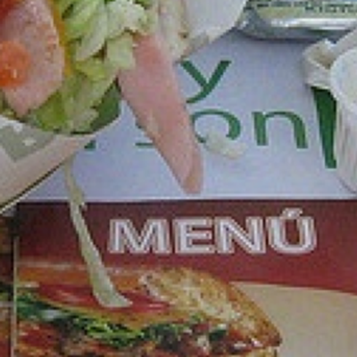
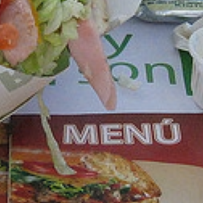

raccourcis : les détails fins sautent le résumé

photo bruitée
① Résumer
il compresse l’image : l’essentiel passe, le bruit non
② Redessiner
il reconstruit l’image en grand à partir du résumé

photo propre
Notre astuce
il ne redessine pas tout : il devine juste le bruit, qu’on retire. Zone déjà propre ? Rien à retirer.

bruitée
−

bruit (grossi)
=

propre